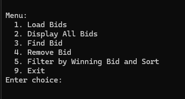

Artifact Overview
This artifact is a Binary Search Tree (BST) program that is written in C++. It was originally developed for CS 300: Data Structures and Algorithms. It was made to show off the abilities to use a BST for insertion, deletion, and in order traversal. However, I wanted to add a way to filter data and then sort it. So, I added the ability to soft by less than a winning bid amount and then filter it by either data of department.
Enhanced Code: View on GitHub
Original Code: View on GitHub
Justification
- Added bid filtering by maximum winning amount.
- Implemented sorting by department or date.
- Added validation for user inputs.
- Developed a
dateToInt()function to accurately sort date strings. - Cleaned up code and improved documentation.
Program Outcomes Demonstrated
- Applied algorithmic principles to design efficient filtering and sorting mechanisms.
- Showcased use of tree traversal, custom comparison logic, and search operations.
- Balanced program usability with computational efficiency and clarity.
Reflection
Enhancing this artifact taught me a lot about balancing usability with efficiency. One of the hardest challenges I faced was sorting the string formatted dates. At first, I couldn’t figure out why my date sort was not working currently. After looking at it for some time I realized C++ was just doing a string compare. So, I decided to break the string apart and put it back together as an integer that would be sortable. This was a reminder of how important data formatting and data processing can be.